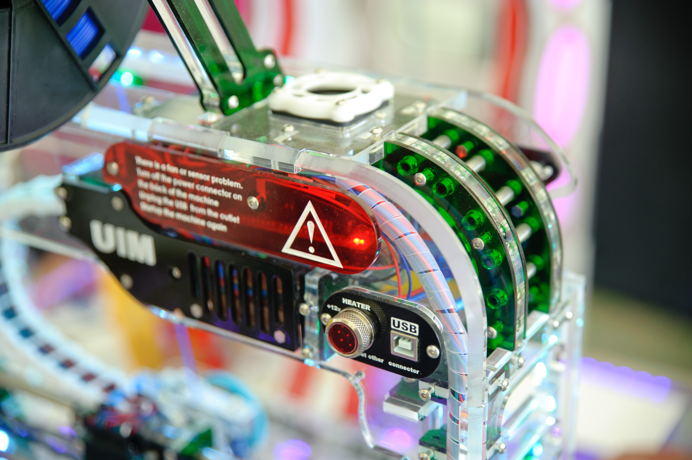

Home
Idea
Cooperate
Method
Invest
這些都是與合作夥伴
在整個設計的每一步
我們不只是設計工業、智能的產品。我們與您合作開發和管理整個項目。
從概念到完成、從專屬到通路的產品，我們能將兩者之間的一切做到極致甚至完美，我們在工業產品設計的各個方面都表現出色。
我們專注於產品構思、具有經驗的的去除投資風險、測試技術概念和試驗每個項目。
01.
始終追求
完美設計
首先，我們喜歡設計不同的產品。這些產品不僅看起來很美，而且直觀、易於使用並且使我們的生活變得更好。
我們在設計低功耗和無線連接的智能工業產品擁有非常豐富的實戰經驗。
我們的設計包括概念和原型設計、低功耗無線設計、嵌入式設計、符合國際標準設計，還有嚴格的品控監管。

02.
首屈一指
工業技術
我們擅長製造東西，這不僅僅是我們優點，而是我們公司的資本。但我們做的不僅僅是組裝零件，更多的是設計與對於工業的熱情。
我們專注於電信、安全和監控以及設施管理等領域的工業產品設計。
我們的工程技術服務包括，高效率和低功耗的電子設備、工業產品和大型機械、嵌入式軟件、逆向工程能力。
03.
精益生產
極度重視
我們一直在思考如何製造我們設計的工業產品，這是我們的第二天性。我們的工業製造部門的製造能力可以讓客戶的產品栩栩如生。
在可能的情況下，我們在製造部門製造原型，一旦設計被採用，我們還可以為客戶提供整個製造過程和供應鏈。讓設計到製造的過程更透明。
我們的製造服務包括，原型製造、小批量生產、供應鏈管理。